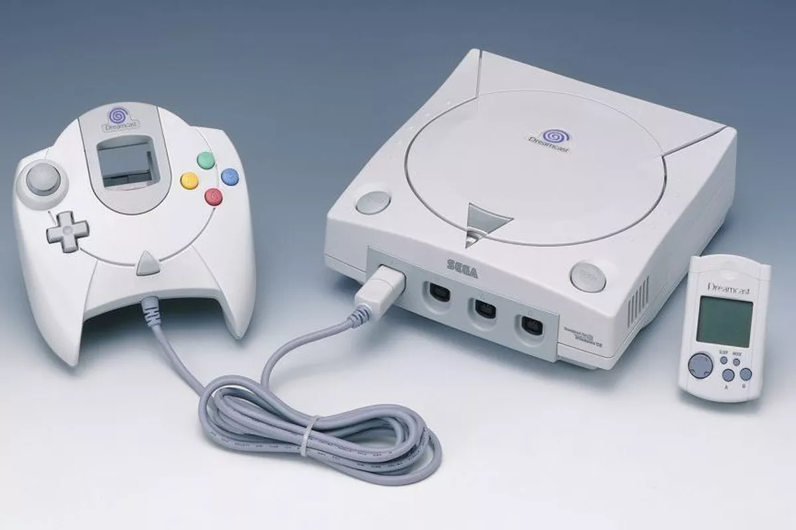
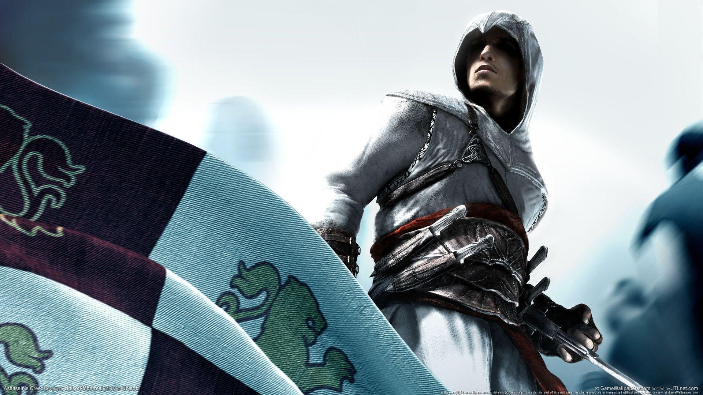

A șasea generație (1998 - 2005)
Sega Dreamcast, lansată în 1998 avut succes în Japonia dar a avut vânzări dezamăgitoare în America de Nord, constrângând Sega să se retragă de pe piața consolelor. PlayStation 2 apărută în anul 2000 a fost a doua consolă din generația pe 128 biti care s-a lansat apoi urmându-i în 2001 Nintendo GameCube și Microsoft Xbox. Această generație de console s-a remarcat prin controversele majore pe care le-a provocat din cauza jocurilor cu conținut mare crimă, violență, consum de droguri, propagandă socială, cât și subiecte divergente de genul religiei, politicii, feminismului și economiei.
A șaptea generație (2005)
Pe primul loc în topul vânzărilor din actuala generație de console este Nintendo Wii, care a revoluționat gaming-ul datorită controlerului neobișnuit, în forma unei telecomenzi dar dotat cu senzori de mișcare. Noua consolă de la Sony PlayStation 3 are un atribut valoros prin opțiunea de instalare a unei distribuții de Linux ca sistem de operare, acest lucru fiind exploatat de comunitatea de gameri prin emularea mult mai simplă a consolelor mai vechi. Xbox360, consola fabricată de Microsoft, are ca avantaj că a fost lansată înaintea celor de mai sus, astfel deținând o gamă mai variată de jocuri
După Nintendo DS,Sony a raspuns cu PSP (PlayStation Portable) și a continuat cu PSP Go. Microsoft a creat noul „Xbox Kinnect” la care nu exista absolut nici un model de controller, iar pentru PS3 a fost lansat PS Move. Pentru PSP au aparut jocuri ce au inregistrat incasari uriase. (Prince of Persia, Assassin's Creed, God of War). Jocurile de tip MMORPG ca World of Warcraft și platformele de jocuri multiplayer cum ar fi Steam devin tot mai populare.
A opta generație (2011 - prezent)
A opta generație debutează cu Wii U, urmând ca în octombrie 2013 să apară Playstation 4 și Xbox One, cu microsoft investind peste un miliard de dolari în dezvoltarea de noi jocuri, în timp ce Sony anunță multe jocuri indie pentru PS4.
Pe partea de portabil sunt lansate Nintendo 3DS, care aduce pentru prima dată jocurile 3D pe micul ecran, și PlayStation Vita, care implementează toutchscreen-ul și pe partea din spate a consolei. Apar și consolele bazate pe sistemul de operare Android, folosit în principal pentru smartphone-uri, cum ar fi Ouya și Nvidia Shield.